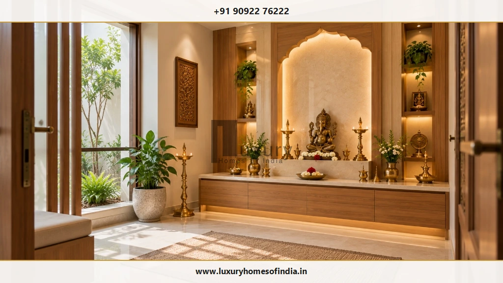
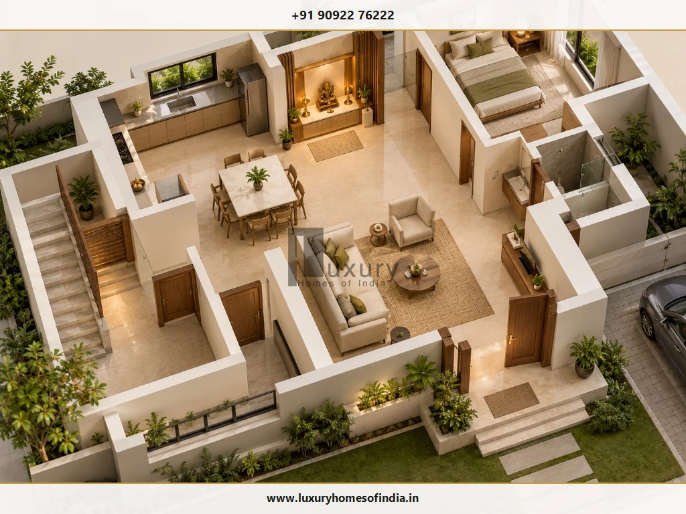
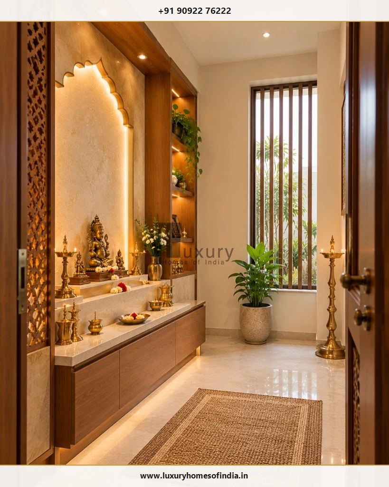
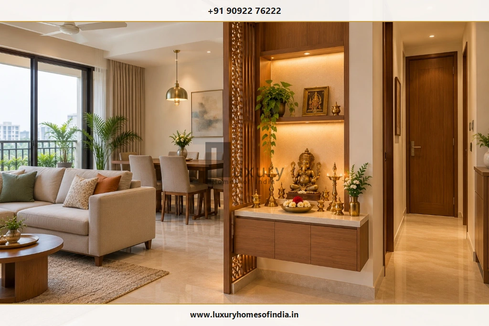
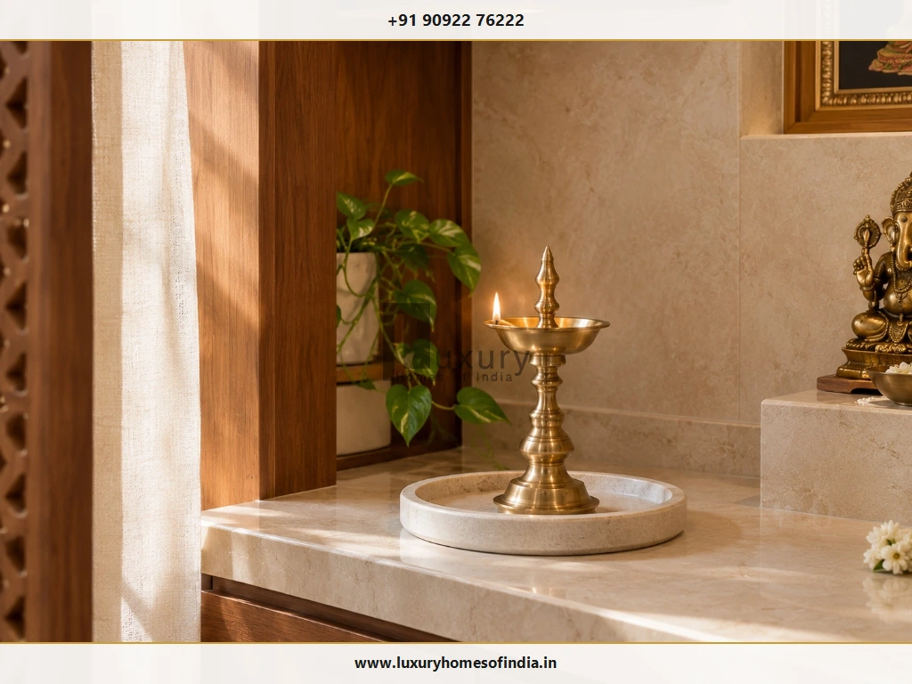

Executive Summary: Key Vastu Placements at a Glance
Pooja room placement as per Vastu traditionally favours the north-east corner, also known as Ishanya Kona, with east and north often considered viable alternatives when the preferred corner is unavailable. However, planning an auspicious and serene prayer space involves far more than simply selecting a compass direction.
Homeowners must carefully integrate the position of the deities relative to worshippers, ergonomic sitting and standing clearances, natural daylighting, smoke ventilation for oil lamps and dhoop, organized storage, and fire safety precautions. For new residential construction, these decisions are most effectively resolved during early architectural floor plan development. In apartments and established residences, a dedicated mandir cabinet, wall niche or screened prayer corner provides a practical alternative that respects spiritual traditions without compromising daily circulation.

Quick Guide: Which Direction Is Best for a Pooja Room?
When planning a home mandir, balance spiritual guidance with your family's personal rituals and the practical layout of the house. The following table summarizes commonly followed Vastu principles and their practical architectural equivalents:
| Planning Consideration | Common Traditional Preference & Architectural Application |
|---|---|
| Preferred Room Location | North-east (Ishanya Kona): Traditionally regarded as the most auspicious sector, drawing gentle morning solar energy. |
| Alternative Locations | East or North: Readily accepted when the north-east is occupied by staircases, entrances, or structural columns. |
| Worshipper's Orientation | Facing East or North: Facing east welcomes morning light and mental clarity; facing north is linked with stability and focus. |
| Deity Orientation | Facing West or South: Geometrically corresponds to the devotee facing east or north during daily rituals. |
| Recommended Colours | White, Ivory, Cream, and Pale Yellow: Serene, luminous hues that reflect light without sensory clutter. |
| Diya & Lamp Placement | South-east Side of Altar: Aligns with Agni (the fire element) in traditional spatial zoning. |
| Compact-Home Solutions | Wall-Mounted Mandir or Niche: Cantilevered cabinets or jaali-screened niches in living/dining areas. |
| Essential Design Checks | Clearances, Ventilation & Fire Safety: Minimum 24-inch diya clearance from wood, stable stone ledge, and smoke exhaust. |
Traditional Beliefs vs Statutory Regulations
These directional preferences reflect cultural and architectural traditions rather than mandatory building codes. Always confirm the spatial arrangement against your family's customary practices and verified site boundaries before finalizing construction drawings.
1. Why Is the North-East Preferred for a Pooja Room?
In classical Vastu Shastra, the north-east quadrant—known as Ishanya Kona—is governed by divine consciousness and associated with water and purity. From a climate-responsive architectural perspective in India, the north-east receives early morning infrared sunlight that is gentle, purifying, and free from the oppressive afternoon heat typical of southern and western orientations.
When developing a new home blueprint, homeowners can evaluate the north-east corner early in the concept stage. Before committing this sector to a permanent pooja room, verify the following:
- Verify true cardinal north on site: Confirm magnetic north using an on-site land survey rather than relying on road alignments.
- Evaluate circulation and approach: Check that accessing the prayer space does not conflict with primary entry foyers, vehicle porches, or dining circulation.
- Choose between room vs compact mandir: Determine whether household routines require an enclosed room or a well-proportioned architectural niche.
- Plan natural daylight and cross-ventilation: Place eastern or northern windows to allow gentle morning illumination and natural breeze circulation.
- Coordinate building services: Keep plumbing lines, sewage stacks, and heavy electrical service panels away from the prayer precinct.

Design Consideration for Existing Homes
A preferred Vastu location should not justify disruptive structural demolitions or an awkward floor plan that makes daily living inconvenient. In completed houses and flats, evaluate functional alternatives such as an east-facing living room prayer niche before considering major civil changes.
2. Can a Pooja Room Be Placed in the East or North?
Yes. When the north-east corner is unavailable or geometrically constrained, both the east and north quadrants serve as widely accepted Vastu alternatives.
East-Side Prayer Area
An east-facing pooja space allows worshippers to face directly towards the morning sun. This orientation provides brilliant early-day natural illumination, promoting an alert and contemplative atmosphere during morning prayers. Ensure that window openings provide pleasant daylight while maintaining visual privacy from neighboring properties.
North-Side Prayer Area
In traditional Vastu, the north is associated with Kubera (wealth and prosperity) and Mercury (intellect). Placing the mandir along a quiet northern wall provides stable, indirect daylight throughout the day without solar heat buildup. Ensure that passage doors and daily traffic routes do not disrupt worshippers sitting on the floor.
What if the North-East Is Already Occupied?
In many urban plots and apartments, the north-east may already house a main entrance staircase, structural shear wall, or bathroom duct. If this occurs, avoid forcing an enclosed prayer room into an awkward corner. Instead, consider:
- An elegant wall-mounted mandir along the eastern or northern wall of the living room.
- A dedicated prayer niche with a decorative jaali screen near the dining area.
- A freestanding wooden mandapam placed in a quiet, clean corner of the family lounge.
Pre-construction rule: Mark the proposed prayer space on the working drawings to verify clear door swings, floor seating clearances, and conduit drops before finalizing carpentry contracts.
3. Which Direction Should the Deities Face?
A frequent point of confusion during mandir planning is the distinction between the direction the worshipper faces and the direction the deity faces. Because the devotee and the idol look towards each other during worship, their directional alignments are opposite.

| Worshipper's Seated / Standing Position | Corresponding Deity / Idol Facing Direction |
|---|---|
| Worshipper faces East (Commonly Preferred) | Deities face West (Mounted on East Wall or facing out from East) |
| Worshipper faces North (Second Preferred) | Deities face South (Mounted on North Wall or facing out from North) |
These relationships represent geometric orientations for the setups described. Certain family lineages (sampradayas) or specific deities (such as Lord Shiva or Lord Hanuman) may follow particular directional traditions. Always confirm the intended orientation with your family elders before installing permanent stone altars.
Altar Installation Checklist
- Mark north, south, east, and west clearly on the floor plan drawing.
- Identify where worshippers will sit on mats or stand during aarti.
- Ensure the deity's pedestal is elevated between chest and eye level for standing worship, or navel to chest level for seated floor prayer.
- Verify that idols do not face direct exterior door openings where sudden gusts could blow out lit lamps.
4. Which Floor Is Suitable for a Pooja Room?
In independent villas, duplexes, and multi-storey residences, deciding which floor to place the pooja room requires balancing accessibility with tranquility.
In luxury duplexes, some families maintain a primary walk-in pooja room on the ground floor for major festivals, accompanied by a compact prayer niche on the upper private floor for quiet evening meditation. There is no statutory building code mandating a specific floor; choose what best supports your family's daily comfort.
5. Where Should You Avoid Placing a Pooja Room?
Certain room adjacencies are discouraged in traditional Vastu and create practical engineering and hygiene issues if not addressed:
| Discouraged Location | Traditional Vastu Concern | Practical Engineering / Functional Issue |
|---|---|---|
| Under a Staircase | Heavy foot traffic moving overhead disrupts sacred energy. | Low sloping headroom, poor ventilation, dim lighting, and dust falling from open stringers. |
| Sharing a Bathroom Wall | Impure association and conflicting energies. | Plumbing noise, pipe leakages, hidden wall dampness, and moisture damage to expensive woodwork. |
| Inside a Bedroom | Sanctity conflicts between rest/privacy and spiritual worship. | Disturbance to resting family members; smoke and lamp soot accumulating on bed linens and wardrobes. |
| In a Utility / Narrow Passage | Neglected energy and lack of sacred dignity. | Circulation bottlenecks, clash with moving laundry baskets, and risk of knocking over burning diyas. |
6. Pooja Room Vastu for Small Apartments
Living in a compact urban apartment does not prevent you from having an inspiring and Vastu-compliant prayer space. When planned with precision, a small footprint can host a complete sanctuary.

- Wall-mounted cantilevered mandir: Mount a teakwood or Corian prayer unit 36 inches above the floor to preserve usable carpet area and simplify floor cleaning.
- Dedicated architectural niche: Carve out a shallow 12-to-15-inch wall recess during interior framing, clad in marble with subtle perimeter LED cove backlighting.
- Laser-cut jaali partition: Use an intricate wooden or brass-trimmed CNC screen to delineate the mandir from the living area without blocking light or airflow.
- Concealed bottom drawers: Incorporate push-to-open low drawers below the altar counter to neatly organize daily pooja samagri, incense, and prayer books.
7. Which Colours Are Suitable for a Pooja Room?
Colour psychology and Vastu traditions both suggest serene, light-reflective palettes for prayer spaces. Understated tones keep the mind centered and prevent visual clutter:
Pure White & Ivory
Symbolizes purity, peace, and spiritual clarity; ideal backdrop for brass deities and marble altars.
Cream & Pale Yellow
Warm, welcoming traditional hues linked with wisdom and spiritual warmth without creating glare.
Natural Teak & Brass
Rich grain finishes paired with subtle metallic highlights that bring timeless South Indian architectural warmth.
Select paint finishes with washable, stain-resistant qualities (such as satin or PU coatings) to ensure easy cleaning of occasional oil or soot spatters.
8. Where Should a Diya Be Placed?
In Vastu traditions, placing oil lamps (diyas) on the south-east side of the altar platform is commonly recommended, as the south-east is governed by Agni, the fire element. Alternatively, the eastern corner of the altar is also widely practiced.

Non-Negotiable Diya Fire Safety Precautions
- Stable, heat-resistant base: Place lamps on heavy marble, granite, or brass trays rather than bare wooden shelves.
- Safe clearance from fabrics: Keep flames at least 24 inches away from window curtains, altar cloths, and garland tassels.
- Vertical clearance: Never mount an open-flame diya directly under low wooden pelmets or enclosed cabinets.
- Isolate electrical wiring: Keep oil bottles and lamp wicks strictly separated from light switches and electrical outlets.
- Avoid turbulent drafts: Position lamps away from direct ceiling-fan blasts that can cause erratic flickering and soot scatter.
- Never leave unattended: Extinguish flames or place protective glass chimneys (deepam glass covers) when leaving the room.
9. Why Do Lighting and Ventilation Matter?
Because Indian pooja rituals frequently involve burning sesame oil, ghee wicks, camphor, and dhoop incense, adequate airflow is essential for human health and interior preservation:
- Natural daylight: East- or north-facing windows provide auspicious daylight while ventilating daily smoke.
- Concealed mechanical exhaust: In compact enclosed rooms, install a low-noise ducted exhaust fan to extract lingering smoke without disturbing quiet prayer.
- Layered artificial lighting: Combine gentle indirect ceiling cove lighting (3000K warm white) with focused anti-glare spots highlighting the deities.
- Electrical switchboard placement: Mount all switches outside the moisture and flame zone, conveniently reachable at the room entrance.
10. Pooja Room Checklist Before Construction
Review this 12-point coordination checklist with your architect and structural engineering team before finalizing working drawings:
True Cardinal Orientation
Verify the site's true magnetic north using an on-site survey rather than relying on municipal road lines.
Evaluate North-East Quadrant
Assess whether the north-east can host the pooja room without compromising main entry flow or structural framing.
Consider East or North Alternatives
If the north-east is structurally constrained, evaluate an east or north wall niche layout.
Confirm Deity & Worshipper Orientations
Plan for worshippers to face east or north, with deities facing west or south accordingly.
Honor Family Traditions
Review the proposed deity layout with family elders to respect ancestral customs.
Clear Door Swings & Circulation
Ensure double-leaf or outward-opening doors do not obstruct hallways or brush against seated worshippers.
Avoid Wet-Wall Conflicts
Ensure the mandir does not share a common wall with bathrooms or damp drainage shafts.
Structural Anchor Engineering
Confirm wall substrate and heavy bracket anchors before mounting heavy marble or solid teakwood units.
Diya Location & Fire Clearances
Designate a south-east heat-resistant stone counter with 24-inch vertical clearances from wood.
Concealed Electrical & Driver Points
Conceal LED drivers with easy access hatches and keep switchboards clear of oil splashes.
Dedicated Samagri Storage
Incorporate shallow drawers for wicks, camphor, matchboxes, and pooja literature to keep counters tidy.
Easy-Clean Non-Porous Finishes
Specify sealed marble, granite, or vitrified surfaces that resist oil stains and wipe clean effortlessly.
Frequently Asked Questions
Plan Your Sacred Space with Luxury Homes of India
Coordinate your pooja room's directional alignment, custom marble joinery, lighting, and ventilation with LHI's premier architectural and villa construction team in Chennai.
Schedule Architectural Consultation